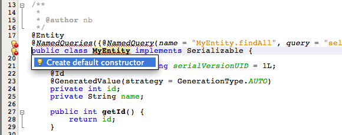

Apache NetBeans
Apache NetBeansLatest release
Тестирование приложения Maven уровня предприятия
| This tutorial needs a review. You can edit it in GitHub following these contribution guidelines. |
This tutorial demonstrates how to test a simple enterprise application using IDE NetBeans and Maven archetypes. В ходе данного учебного курса вы создадите приложение уровня предприятия, содержащее класс сущности и сеансный компонент. Вы будете использовать·мастер для создания простого тестового класса для класса компонента, а затем запустите тестирование в среде IDE. Класс теста создаст экземпляр контейнера EJB, встроенного в GlassFish, для тестирования подключения к базе данных.
| Если вы используете GlassFish 3.1.x, ознакомьтесь с разделом Тестирование корпоративного приложения Maven с помощью встроенного сервера GlassFish Server 3.1 |
Упражнения по темам руководства
Для работы с этим учебным курсом требуется следующее программное обеспечение и ресурсы.
| Программное обеспечение или материал | Требуемая версия |
|---|---|
7.4, 8.0, комплект Java EE |
|
версия 7 или 8 |
|
GlassFish Server Open Source Edition 3.1.2.2 |
4.0 |
| Программа установки для GlassFish Server 3.1.1 включена в загружаемый пакет Java EE. You can install and register GlassFish as part of the IDE NetBeans installation process. |
Предпосылки
Предполагается, что читатель обладает базовыми знаниями по следующим технологиям или опытом программирования с их использованием:
-
Программирование на Java
-
IDE NetBeans
Перед изучением этого учебного курса можно ознакомиться со следующей документацией:
Использование Maven в среде IDE
Support for Maven is fully integrated in IDE NetBeans. Разработка проекта, в котором используется платформа Maven, практически идентична случаю разработки с использованием Ant. Однако в случае Maven имеются некоторые отличия, касающиеся способа сборки проектов и работы с зависимостями. Советы, приведенные ниже, могут помочь избегнуть ряда проблем при первом создании приложения Maven.
Проверка параметров Maven
Если это ваш первый проект Maven, проверьте параметры настройки Maven в окне "Параметры". Для работы с этим учебным курсом необходимо установить Maven на локальный компьютер. Maven включен в комплект IDE и устанавливается при установке среды IDE.
-
Откройте окно 'Настройки' в IDE (Сервис > Параметры; NetBeans> Предпочтения на Mac).
-
Выберите в окне "Параметры" категорию "Java" и перейдите на вкладку "Maven".
-
Подтвердите указание домашней страницы Maven.
Можно использовать версию Maven, входящую в комплект среды IDE, либо указать местоположение локальной установки Maven (требуется версия 2.0.9 или более поздняя).
-
Для закрытия окна "Параметры" нажмите кнопку "ОК".
Примечания. Поддержка Maven автоматически включается при включении Java в среде IDE. Если нет, необходимо включить подключаемый модуль Java EE.
Обновите репозитории Maven
Локальные и удаленные репозитории Maven используются для автозавершения кода, а также при сборке проектов. Обновление индексов удаленных репозиториев Maven требуется для обеспечения немедленной доступности всех артефактов, которые могут потребоваться при разработке проекта. Частоту проверки наличия обновлений можно настроить на вкладке "Maven" в окне "Параметры" среды IDE. Вы можете выполнить немедленную проверку обновлений и проверку локальных и удаленных репозиториев Maven в окне 'Службы'.
-
Выберите меню "Окно" > "Службы". Откроется окно "Службы".
-
Разверните узел 'Репозитории Maven' в окне 'Службы'.
-
Щелкните правой кнопкой мыши узел репозитория и выберите во всплывающем меню 'Обновить индекс'.
При нажатии кнопки "Обновить индексы" в среде IDE выполняется проверка и загрузка самого свежего индекса для каждого из настроенных удаленных репозиториев Maven. Индекс представляет текущее состояние артефактов, расположенных в репозитории, и используется для предоставления ссылок на артефакты, доступных для использования в приложении. По умолчанию артефакты не загружаются из репозитория автоматически без явно обозначенной необходимости в них.
Примечания.
-
Размер индексов довольно велик и обновление всех индексов может занять значительное время.
Дополнительные сведения об использовании Maven в IDE NetBeans см. в разделе Настройка Maven в учебном курсе Создание приложения Swing Maven с помощью Hibernate, а также в Испытанные приемы для Apache Maven в IDE NetBeans.
Создание приложения уровня предприятия
В данном разделе вы создадите простое веб-приложение, содержащее класс сущности и сеансный компонент, имеющий доступ к классу сущности.
Создание проекта веб-приложения
Цель этого упражнения заключается в создании веб-приложения Java EE на основе архетипа Maven с помощью мастера создания проектов. После создания проекта с помощью мастера необходимо указать GlassFish Server 3.1.1 в качестве целевого сервера.
-
Выберите 'Файл' > 'Новый проект' (Ctrl-Shift-N; ⌘-Shift-N в Mac) в главном меню, чтобы открыть мастер создания проектов.
-
Выберите "Веб-приложение" в категории Maven. Нажмите кнопку "Далее".
-
Дайте проекту имя mavenwebtestapp и задайте местоположение проекта. Нажмите кнопку "Далее".
-
Выберите сервер GlassFish в раскрывающемся списке 'Сервер'.
-
Выберите Java EE 6 Web или Java EE 7 Web в списке 'Версия Java EE'. Нажмите кнопку "Готово".
После нажатия кнопки "Готово" среда IDE создает веб-приложение и открывает проект в окне "Проекты".

Figure 1. В окне 'Проекты' отображаются созданные проекты
Если развернуть узел проекта в окне 'Проекты', можно увидеть, что файл JAR javaee-web-api указан в качестве зависимости проекта, а JDK - в качестве зависимости Java. Среда IDE создала файл POM проекта pom.xml , и этот файл указан в списке в узле "Файлы проекта".
Создание класса сущности
В данном упражнении будет использован мастер создания файла для создания класса сущности. После создания класса сущности выберите в мастере источник данных jdbc/sampl . Нет необходимости создавать или регистрировать новый источник данных, поскольку источник данных jdbc/sample был зарегистрирован при установке сервера.
| Если необходимо создать новый источник данных или использовать другой источник данных, источник данных должен быть зарегистрирован на сервере до тестирования приложения, используя встроенный контейнер. При тестировании приложения с помощью встроенного контейнера среда IDE не зарегистрирует источник данных, в отличие от развертывания на экземпляре сервер GlassFish. |
-
Щелкните узел проекта правой кнопкой мыши и выберите команду "Создать" > "Класс сущности".
В качестве альтернативы можно использовать 'Файл' > 'Создать файл' (Ctrl-N; ⌘-N в Mac) в главном меню и выбрать 'Класс сущности' в категории 'Сохраняемость'.
-
Введите MyEntity для имени класса.
-
Выберите
com.mycompany.mavenwebtestappв качестве пакета и установите тип первичного ключа *int*. -
Подтвердите выбор "Создать единицу сохранения состояния". Нажмите кнопку "Далее".
-
Выберите jdbc/sample из раскрывающегося списка "Источник данных".
-
Подтвердите выбор "Использовать интерфейсы API транзакций Java" и выберите "Удалить и создать" в качестве стратегии создания таблицы. Нажмите кнопку 'Готово'.

Figure 2. В окне 'Проекты' отображаются созданные проекты
После нажатия кнопки "Готово" среда IDE создает класс MyEntity и открывает его в редакторе исходного кода. В качестве зависимостей проекта IDE добавляет артефакты eclipselink , javax.persistence и org.eclipse.persistence.jpa.modelgen.processor .
-
В редакторе исходного поля добавьте к классу закрытое поле
имя.
private String name;-
Правой кнопкой мыши щелкните редактор и выберите "Методы получения и установки" во всплывающем меню "Вставка кода" (Alt-Insert; Ctrl-I на Mac), чтобы создать метод получения и установки для поля
имя. -
Добавьте следующий конструктор.
public MyEntity(int id) {
this.id = id;
name = "Entity number " + id + " created at " + new Date();
}-
Добавьте следующие аннотации
@NamedQueriesи@NamedQuery(выделено жирным), чтобы создать запрос SQL с именем, который выполнит поиск всех записей в таблице MyEntity.
@Entity
*@NamedQueries({
@NamedQuery(name = "MyEntity.findAll", query = "select e from MyEntity e")})*
public class MyEntity implements Serializable {-
Щелкните подсказку в поле слева, рядом с объявлением класса, и выберите подсказку Создать конструктор по умолчанию.

Figure 3. В окне 'Проекты' отображаются созданные проекты
-
Исправьте импортированные операторы (Ctrl-Shift-I; ⌘-Shift-I в Mac) для добавления операторов импорта для
javax.persistence.NamedQuery,javax.persistence.NamedQueriesиjava.util.Date. Сохраните изменения.
Создание компонента сеанса
В данном упражнении для создания сеансного фасада для класса сущности MyEntity используется мастер. При использовании мастера для создания фасада среда IDE также создает абстрактный фасад, содержащий такие методы. как create и find , широко используемые при доступе к классам сущностей. Затем к фасаду добавляются два метода.
-
Щелкните узел проекта правой кнопкой мыши и выберите команду "Создать" > "Другие".
В качестве альтернативы можно использовать 'Файл' > 'Создать файл' (Ctrl-N; ⌘-N в Mac) в главном меню, чтобы открыть мастер создания файлов.
-
Выберите сеансные компоненты для классов сущностей в категории Enterprise JavaBeans. Нажмите кнопку "Далее".
-
Выберите класс
MyEntityиз списка доступных классов сущностей и нажмите кнопку "Добавить". Нажмите кнопку "Далее". -
Используйте свойства по умолчанию на панели мастера "Созданные сеансные компоненты". Нажмите кнопку 'Готово'.
При нажатии кнопки "Готово" среда IDE создает AbstractFacade.java и MyEntityFacade.java в пакете com.mycompany.mavenwebtestapp и открывает классы в редакторе исходных кодов.
В редакторе исходных кодов можно увидеть, что среда IDE создала код для EntityManager и добавила аннотацию @PersistenceContext для указания единицы сохранения состояния.
@Stateless
public class MyEntityFacade extends AbstractFacade<MyEntity> {
@PersistenceContext(unitName = "com.mycompany_mavenwebtestapp_war_1.0-SNAPSHOTPU")
private EntityManager em;
@Override
protected EntityManager getEntityManager() {
return em;
}
public MyEntityFacade() {
super(MyEntity.class);
}
}-
Добавьте следующие методы к
MyEntityFacade.java.
@PermitAll
public int verify() {
String result = null;
Query q = em.createNamedQuery("MyEntity.findAll");
Collection entities = q.getResultList();
int s = entities.size();
for (Object o : entities) {
MyEntity se = (MyEntity) o;
System.out.println("Found: " + se.getName());
}
return s;
}
@PermitAll
public void insert(int num) {
for (int i = 1; i <= num; i++) {
System.out.println("Inserting # " + i);
MyEntity e = new MyEntity(i);
em.persist(e);
}
}-
Исправьте операторы импорта, чтобы добавить импорт всего, что нужно. Сохраните изменения.

Figure 4. В окне 'Проекты' отображаются созданные проекты
Убедитесь, что * javax.persistence.Query * выбран в диалоговом окне 'Исправить все выражения импорта'.
|
Создание теста сеансного компонента
В данном разделе создается тестовый класс для сеансного фасада MyEntityFacade . Среда IDE создаст схему тестовых методов для каждого метода в классе фасада, а также для каждого метода в абстрактном фасаде. Будут аннотированы тестовые методы, созданные для методов в абстрактном фасаде, чтобы указать среде IDE и средству тестирования JUnit игнорировать их. Затем будет изменен тестовый метод для метода verify , добавленного в MyEntityFacade .
В созданных тестах вы увидите, что среда IDE автоматически добавляет код, вызывающий EJBContainer , для создания экземпляра контейнера EJB.
-
Правой кнопкой мыши щелкните
MyEntityFacade.javaв окне 'Проекты' и выберите 'Сервис' > 'Создать тесты'. -
Выберите платформу тестирования из раскрывающегося списка 'Платформа'
-
В диалоговом окне "Создать тесты" используйте параметры по умолчанию. Нажмите кнопку "ОК".
| При первом создании теста JUnit необходимо указать версию платформы JUnit. Выберите JUnit 4.x как версию JUnit и нажмите 'Выбрать'. |
По умолчанию среда IDE создает скелет тестового класса, содержащий тесты для каждого из методов в MyEntityFacade и AbstractFacade . Среда IDE автоматически добавляет к файлу POM зависимость от JUnit 4.10.
-
Аннотируйте каждый из тестовых методов, кроме
testVerify, с помощью аннотации@Ignore. Выполняя тесты, среда IDE пропустит все тесты с аннотацией@Ignore.
Также можно удалить все тестовые методы, кроме testVerify .
-
Расположите метод теста
testVerifyв тестовом классе.
Тест содержит строку, вызывающую EJBContainer .
@Test
public void testVerify() throws Exception {
System.out.println("verify");
EJBContainer container = javax.ejb.embeddable.EJBContainer.createEJBContainer();
MyEntityFacade instance = (MyEntityFacade)container.getContext().lookup("java:global/classes/MyEntityFacade");
int expResult = 0;
int result = instance.verify();
assertEquals(expResult, result);
container.close();
// TODO review the generated test code and remove the default call to fail.
fail("The test case is a prototype.");
}-
Внесите следующие изменения (выделено полужирным) в схему метода теста
testVerify.
@Test
public void testVerify() throws Exception {
System.out.println("verify");
EJBContainer container = javax.ejb.embeddable.EJBContainer.createEJBContainer();
MyEntityFacade instance = (MyEntityFacade)container.getContext().lookup("java:global/classes/MyEntityFacade");
*System.out.println("Inserting entities...");
instance.insert(5);*
int result = instance.verify();
*System.out.println("JPA call returned: " + result);
System.out.println("Done calling EJB");
Assert.assertTrue("Unexpected number of entities", (result == 5));*
container.close();
}-
Исправьте выражения импорта для добавления
junit.framework.Assert. Сохраните изменения.
Теперь необходимо внести изменения в файл POM и добавить зависимость от файла <glassfish.embedded-static-shell.jar> , расположенного в локальном каталоге установки сервера GlassFish.
-
Откройте файл
pom.xmlв редакторе и найдите элемент<properties>.
<properties>
<endorsed.dir>${project.build.directory}/endorsed</endorsed.dir>
<project.build.sourceEncoding>UTF-8</project.build.sourceEncoding>
</properties>-
Отредактируйте элемент
<properties>, добавив в него элемент<glassfish.embedded-static-shell.jar>(выделен полужирным шрифтом), указывающий местоположение файла JAR в локальном каталоге установки GlassFish. Затем необходимо создать ссылку на это свойство в зависимости артефакта.
<properties>
<endorsed.dir>${project.build.directory}/endorsed</endorsed.dir>
<project.build.sourceEncoding>UTF-8</project.build.sourceEncoding>
*<glassfish.embedded-static-shell.jar>_<INSTALLATION_PATH>_/glassfish-4.0/glassfish/lib/embedded/glassfish-embedded-static-shell.jar</glassfish.embedded-static-shell.jar>*
</properties>
<INSTALLATION_PATH> - абсолютный путь к локальному каталогу установки GlassFish. В случае изменения пути к локальной установке потребуется изменить этот элемент в файле POM.
|
-
Щелкните правой кнопкой мыши узел "Зависимости" в окне проектов и выберите пункт "Добавить зависимость".
-
В диалоговом окне 'Добавление зависимости' в текстовом поле 'Запрос' введите embedded-static-shell.
-
Выделите файл 4.0 JAR в результатах поиска и нажмите 'Добавить'.

Figure 5. Окно 'Результаты теста'
При нажатии на кнопку 'Добавить' среда IDE добавляет зависимость к файлу POM.
Теперь нужно внести изменения в файл POM, указав локальный каталог установки GlassFish в качестве источника JAR.
-
Найдите соответствующую зависимость в файле POM и внесите изменения (выделены полужирным шрифтом). Создайте в элементе ссылку на ранее добавленное свойство
<glassfish.embedded-static-shell.jar>и укажите область (<scope>). Сохраните изменения.
<dependency>
<groupId>org.glassfish.main.extras</groupId>
<artifactId>glassfish-embedded-static-shell</artifactId>
<version>4.0</version>
*<scope>system</scope>
<systemPath>${glassfish.embedded-static-shell.jar}</systemPath>*
</dependency>-
В окне 'Службы' щелкните правой кнопкой мыши узел GlassFish Server и выберите 'Пуск'.
Сервер базы данных JavaDB будет также запускаться при запуске сервера GlassFish.
-
В окне 'Проекты' щелкните правой кнопкой мыши узел проекта и выберите 'Тестирование'.
После выбора пункта "Тест" среда IDE создаст приложение и запустит этап тестирования жизненного цикла сборки. Модульные тесты будут выполнены при помощи подключаемого модуля surefire, который поддерживает запуск тестов JUnit 4.x. Подробнее о подключаемом модуле surefire см. http://maven.apache.org/plugins/maven-surefire-plugin/.
Результаты теста отображаются в окне 'Результаты теста'. Можно открыть окно 'Результаты теста', выбрав 'Окно'> 'Выходные данные'> 'Результаты тестов' в главном меню.

Figure 6. Окно 'Результаты теста'
В окне 'Результаты теста' вы можете нажать на значок 'Прошел успешно' ( ), чтобы отобразить список всех тестов, которые прошли успешно. В данном примере можно увидеть девять результатов. Если посмотреть на окно 'Результаты', можно увидеть, что был запущен только один тест, а восемь было пропущено. Пропущенные тесты включены в список тестов, которые прошли в окне 'Результаты теста'.
), чтобы отобразить список всех тестов, которые прошли успешно. В данном примере можно увидеть девять результатов. Если посмотреть на окно 'Результаты', можно увидеть, что был запущен только один тест, а восемь было пропущено. Пропущенные тесты включены в список тестов, которые прошли в окне 'Результаты теста'.
Running com.mycompany.mavenwebtestapp.MyEntityFacadeTest
verify
...
Inserting entities...
Inserting # 1
Inserting # 2
Inserting # 3
Inserting # 4
Inserting # 5
Found: Entity number 2 created at Wed Oct 09 19:06:59 CEST 2013
Found: Entity number 4 created at Wed Oct 09 19:06:59 CEST 2013
Found: Entity number 3 created at Wed Oct 09 19:06:59 CEST 2013
Found: Entity number 1 created at Wed Oct 09 19:06:59 CEST 2013
Found: Entity number 5 created at Wed Oct 09 19:06:59 CEST 2013
JPA call returned: 5
Done calling EJB
...
Results :
Tests run: 9, Failures: 0, Errors: 0, Skipped: 8Дополнительные сведения
Подробнее об использовании IDE NetBeans для разработки приложений Java EE см. в следующих ресурсах:
Дополнительные сведения по использованию компонентов уровня предприятия приведены в учебном курсе по Java EE 6.
To send comments and suggestions, get support, and keep informed on the latest developments on the IDE NetBeans Java EE development features, join the nbj2ee mailing list.